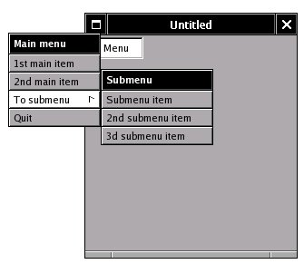
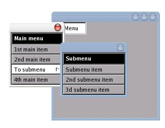
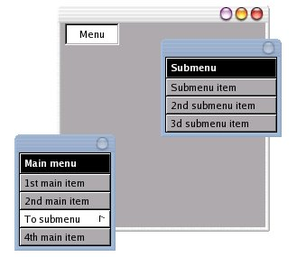

| LAST: Programming Details 2 | Contents | NEXT: Library description |
The WINGs library offers functions to set up a structure for a menu with submenus. However, the mapping of the menu itself is left to the Window Maker window manager. Without Window Maker, a menu which has been programmed this way, will not show. The easy way around this, is to use the source code for the editable menu in the WPrefs application, change it to give it the usual menu functionality, and compile this modified source code with the application's code. The two files you need to do this, are in the Window Maker's 0.92 source code directory WPrefs.app. Copy WPrefs.app/editmenu.c and WPrefs.app/editmenu.h to your current directory. A couple of little changes to editmenu.c will be sufficient to give adequate menu/submenu functionality.
Change the editable menu widget struct W_EditMenuItem. The EditMenuItem structure is the structure which is used to programme the editable menu in the Window Maker Preferences utility. To use it as a regular menu, it needs a pointer to the function which you want to execute when you click the item. Any WINGs widget structure needs to keep W_Class widgetClass and WMView *view as its first two declarations. Insert the line WMAction * callback; somewhere after them. The widget declaration will now be:
typedef struct W_EditMenuItem {
W_Class widgetClass;
WMView *view;
struct W_EditMenu *parent;
char *label;
WMPixmap *pixmap;
void *data;
WMCallback *destroyData;
WMAction * callback;
struct W_EditMenu *submenu;
struct {
unsigned isTitle:1;
unsigned isHighlighted:1;
} flags;
} EditMenuItem;void WSetEditMenuItemAction(WEditMenuItem *item, WMAction *callback)
{
item->callback= callback;
}We shall make a window with one button which will make the menu pop up. The code to create the menu is as follows. Have editmenu.c and editmenu.h in the same directory as the window application code, insert #include "editmenu.h" somewhere at the top.
WEditMenu *submenu, *menu;
WEditMenuItem * menuitem;
submenu=WCreateEditMenu(screen,"Submenu");
menuitem =WAddMenuItemWithTitle(submenu,"Submenu item");
menu=WCreateEditMenu(screen,"Main menu");
menuitem = WAddMenuItemWithTitle(menu,"To submenu");
WSetEditMenuSubmenu(menu, menuitem , submenu);
menuitem = WAddMenuItemWithTitle(menu,"Main item");
WMRealizeWidget(submenu);
WMRealizeWidget(menu);WEditMenuShowAt(menu,x,y,w). However, it will not show anything unless it is used after the intial window has been mapped. To do this, we use WMSetButtonAction on a button, and make the WMAction map the menu. We pass it pointers to both the menu and the window, so that we can map the menu in the window's neighbourhood. The WMAction will look like :
void getMenu(WMWidget *self, void *data){
WMPoint position;
struct datacouple *tmp=(struct datacouple *)data;
if(WMGetButtonSelected(self)){
position=WMGetViewScreenPosition(WMWidgetView(tmp->window));
WEditMenuShowAt(tmp->menu,(position.x>MENUWIDTH)?position.x-MENUWIDTH:0,\
position.y+MENITEMHT,tmp->window);
}else
WEditMenuHide(tmp->menu);
}struct datacouple{WMWindow *window; WEditMenu *menu;} datacouple;
. Realize the window before the others. The code with details is here. To compile it, you now type cc -x c EighthWindow.c editmenu.c -lXft -L/usr/X11/lib -L/usr/lib -lWINGs -lwraster -o EighthWindow. editmenu.c is, of course, the modified source file.
To use the callback functions, we need to execute them somewhere. To do this, search the static void selectItem function in the editmenu.c source. After its last line, insert the line: if (menu->selectedItem->callback) menu->selectedItem->callback(menu->selectedItem,NULL);. Define the callback before main as, eg.:
void menuItemAction(void *self, void *data){
fprintf(stderr, "Selected\n");}main code with the WSetEditMenuItemAction( menuitem, menuItemAction);. There is also a little addition to the getMenu function, to reset the menu when we hide it.
The function WCreateEditMenuItem in editmenu.c associates to ButtonPress events on the menu item widget, the function handleItemClick. This event handler function calls the function selectItem when it gets this event, and does a few other things we shall not need any more. The selectItem function goes through a few things. If the clicked menu item is a submenu entry, it checks its location and maps the submenu. At the end of this function we have inserted the line which calls our callback function in case the pointer to it is not NULL. If the menu has to appear, legacy-style, below a fixed bar in the window's top, we would just need to calculate this position, and also need to hide the menu whenever we drag the window itself. For a free floating menu, the latter is not very important.
The application source code is here. The editmenu.c code with the first few changes in it, is here. The changes are marked by a comment starting with /* MOD . There is one change in the new editmenu.h file.
|  |
|  |
XSetTransientForHint will, in xfce4, make the menu widget look like the one in the image shown on the left. The window manager gives it a title bar and button. It also allows to drag the menu. The code must provide functions to handle the event that the close button on the title bar is clicked, or the menu window will have the same problem as our first window. The window manager can also be bypassed. To do this, there is the Xlib function int XChangeWindowAttributes(Display *display, Window w,
unsigned long valuemask, XSetWindowAttributes
*attributes) . As shown in the example code, it can be used to set the window attribute override_redirect. This will block window manager interference with the placement of windows. The menu window will now in all window managers look like the one in the first image at the top of this page.
| LAST: Programming Details 2 | Contents | NEXT: Library description |